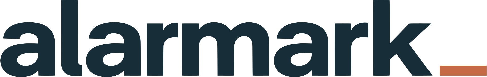
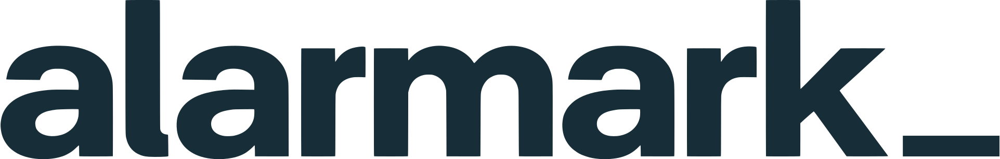
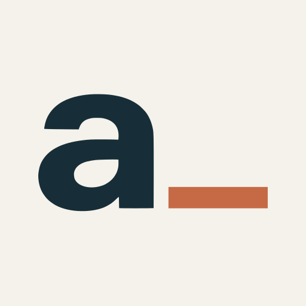
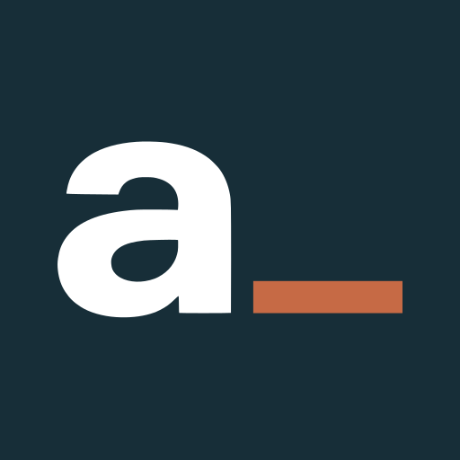
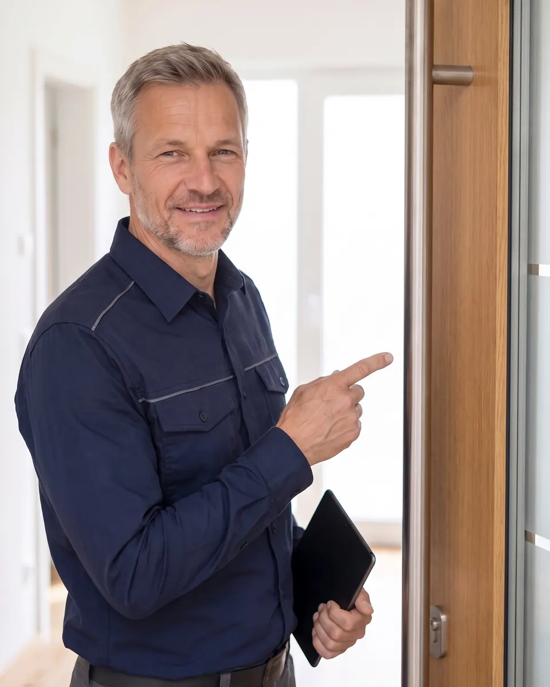

Styleguide v1 – Warm Precision
Idee: Der Copper-Unterstrich aus dem Logo ist der Marker für „dein nächster Schritt“. Er taucht nur dort auf, wo du handelst oder gewählt hast: Fortschritt, deine Auswahl, Marks Tipp.
Logo
Primär auf Ivory/Weiß · Schutzraum 1 × x-Höhe (bei 240 px = 27 px)
Invers auf Deep Slate, ab 104 px

Auf Sage nur Mono Slate
Kurzzeichen a_


Mindestbreiten: Primär/Mono Slate 96 px, Invers/Mono Weiß 104 px, Kurzzeichen 16 px. No-Gos: Logo-Spezifikation v2, Abschnitt 7. Logo ist final und wird nur über die SVG-Dateien eingebunden.
Farben
Deep Slate #172E38 · Marke, Text · 12,7:1 auf Ivory, 14,2:1 auf Weiß
Charcoal #263238 · Nebentext · 11,8:1 Ivory
Action #A94E2D · Button, Link · Weiß darauf 5,5:1, auf Ivory 4,9:1 · Hover #913F23 7,2:1 · Pressed #81351E 8,5:1
Copper #C66A45 · nur Unterstrich, Fortschritt, deine Wahl · 3,4:1 Ivory · nie Text
Sage #8A9C96 · Linien, Flächen · kein Text (2,6:1)
Sage 700 #73857F · NEU, Vorschlag · Feldrahmen 3,9:1 auf Weiß
Warm Ivory #F5F2EB / Weiß · Grund / Fläche
Focus #155EEF · 4,8:1 Ivory; auf Slate weißer Ring
Error #B42318 6,6:1 Weiß · Success #176B4D 6,5:1 · Disabled #B9CAC3 + Slate 8,3:1
Flächenanteil: Ivory/Weiß ca. 80 %, Slate ca. 15 %, Copper/Action höchstens 5 %. Kontraste nach WCAG-Formel gerechnet, nicht gemessen.
Typografie – IBM Plex Sans 400/500/600
H1 52/58 Desktop
H1 34/38 Mobil · H2 32 Desktop
H2 26/31 Mobil
H3 20/26
Lead 18/28
Text 16/25, max. 62 Zeichen je Zeile
Klein 14/21 nur für Hinweise · Ziffern: Plex tabellarisch (font-variant-numeric:tabular-nums) in Kosten.
Abstände und Raster
Skala 8 · 12 · 16 · 24 · 32 · 48 · 64 · 96 px. Innerhalb einer Gruppe 8–16, zwischen Gruppen 24–32, Abschnitte 64 mobil / 96 Desktop. Mobil 1 Spalte, Rand 20 px. Desktop 12 Spalten, max. 1200 px, Rand 48, Spalte 24. Radien 8 (Bedienelemente) und 16 (Karten, Bilder).
Buttons
Pro Ansicht genau ein Primärbutton. Mindesthöhe 52 px (Link 44 px). Hover nur bei Maus, Druck 0,98 in 120 ms.
Check und Formular
Fragen- und Formulartexte sind Beispiele (Vorschlag für Copywriting); Einwilligungstext folgt nach Rechtsprüfung.
Wohnst du zur Miete oder im Eigentum?
Dein Weg
Vom Fachbetrieb installieren lassen
Karten
Marks Merksatz:Erst verstehen, dann entscheiden.
Keine Seitenstreifen, keine Icon-Kacheln, keine Karten in Karten, Innenabstand mindestens 24 px.
Minimal Path
- Linie nur bei echter Beziehung: eine Entscheidung, drei Wege.
- Alle Wege gleich groß, gleich gefärbt.
- Copper-Knoten nur für die Wahl der Person (hier Beispiel), nie für „beste“ Option.
- Mobil vertikal, Desktop horizontal.
Mark – Bildausschnitte mit KI-Icon


mark-hero 4:5 mobil und Desktop (50 % 18 %), 1:1 Quadrat (50 % 14 %); mark-portrait 4:5 (45 % 20 %); mark-tablet 3:2 (50 % 25 %). Gesicht immer vollständig. KI-Icon 32 px oben links, kein Textlabel.
Bewegung
Nur Rückmeldung und Orientierung: Farbe 150 ms, Druck 120 ms, Fortschritt 200 ms, ease-out. Nur transform und opacity bzw. Farbe. Kein Bounce, keine Endlos-Animation. Bei reduzierter Bewegung aus.
Do und Don't
- Echte Wohnräume, weiches Licht
- Ein Primärbutton je Ansicht
- Copper sparsam als Marker
- Ivory als Grund, Weiß für Flächen
- Kein Rot als Alarmfarbe, kein Schild, kein Schloss
- Keine Verläufe, Glows, Pill-Chips oder Großbuchstaben-Zeilen
- Weiß auf Copper, Copper als Textfarbe
- Druck, Countdown, vorausgewählte Häkchen